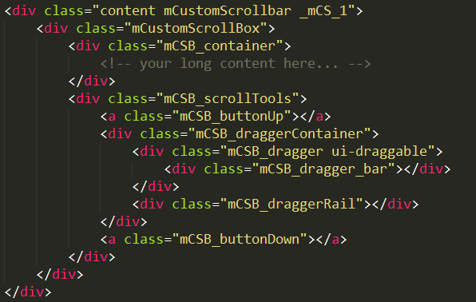
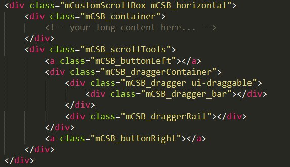

作者Manos 是希腊的前端开发爱好者，开发了很多的jquery插件。
github：https://github.com/malihu
插件是2010.8.1发布的，最后更新是2016.7.11
mCustomScrollbar 是一款基于 jQuery的自定义滚动条小插件，可以通过css自定义垂直或水平两个方向的滚动条。它提供了鼠标滚动的支持，并且在滚动的过程中，还可以缓冲滚动使得滚动更加的平滑，还可以自动调整滚动条的位置和定义滚动到的位置等。总之，非常好用就是了 :-)
第一步，需要引入样式文件和按钮图片：
../jquery.mCustomScrollbar.css mCSB_buttons.png
第二步，加载必须的JS文件
../js/minified/jquery-1.11.0.min.js ../jquery.mCustomScrollbar.concat.min.js
第三步，应用mCustomScrollbar
(function($){
$(window).on("load",function(){
$(selector).mCustomScrollbar();
};
})(jQuery);
第四步，在页面中添加内容和 mCustomScrollbar的样式。要实现自定义滚动条，必须要出现滚动条了才可以，所以我们还要对这个块加上一些 CSS 来让它出现滚动条，否则是没有效果的。加上的样式很简单，就是要定义区域的宽或者高，或者宽高都定义，然后再定义
overflow : auto这样如果内容超出了指定的宽高，就会出现滚动条。如果容器的内容开始没有超出容器的大小，内容是动态添加的，那么就需要添加时调用
$(selector).mCustomScrollbar();这样的话就可以在内容超出时，生成自定义滚动条了。
setWidth: false, // 设置内容的宽度 值可以是像素(int)或者百分(string)，默认false
setHeight: false, // 设置内容的高度 值可以是像素(int)或者百分(string)，默认false
setTop: '0px', // 设置内容的位置的top属性(string),默认0
setLeft: '0px', // 设置内容的位置的Left属性(string),默认0
axis: 'y', // 定义内容滚动轴线,'x'为水平，'y'为垂直(默认)，'yx'为两个方向都有
scrollbarPosition: "outside", // 定义滚动条的位置是在选择器选择的元素的里面还是外面，默认inside
scrollInertia: 550, // 设置滚动条的惯性值，滚动到底所需毫秒数，值越大滚动越慢，0为disable
autoDraggerLength: true, // 设置滑块长度是否自动，默认是true，设置成false，则可以在样式中设置固定长度的滚动条
autoHideScrollbar: false, // 是否自动隐藏那个滑块，默认是false
autoExpandScrollbar: true, // 设置滚动条获取焦点，或拖拽滚动条是，是否扩大滚动条
alwaysShowScrollbar: 0, // 设置是否保持滚动条显示，甚至没有内容也显示，0–无效(default)，1–轨道可见，2–全可见
snapAmount: [200,0],
snapOffset: 100,
// theme: 'fluo-light', // 使用自定义样式
// live: true,
// liveSelector: "#content-copy",
mouseWheel:{
enable: false, // 鼠标滚轮是否有效
scrollAmount: 100, // 设置鼠标滚轮每步滚动的像素值，默认auto
axis: 'x', // 鼠标滚轮滚动x轴还是y轴的滚动滑块，默认'y',为什么'x'无效
preventDefault: true,
deltaFactor: 10, // 设置一个滚动轮槽口（one wheel notch scrolls）的滚动像素，默认auto，为浏览器或操作系统默认
normalizeDelta: true, // 启用或禁用鼠标轮加速度 (Δ),
invert: true, // 反转鼠标滚轮的滚动方向。
disableOver: ["select","option","keygen","datalist","textarea"], // 设置当光标正在该标签禁用鼠标滚轮值,默认["select","option","keygen","datalist","textarea"]
},
scrollButtons:{
enable:false, // 设置滚动按钮是否有效
scrollType:"continuous",
scrollSpeed:20, // 设置点击滚动按钮时候的滚动速度(默认 20) 设置一个更高的数值可以更快的滚动
scrollAmount:40, // 设置按钮的滚动量(单位：像素）
tabindex:100 // 设置按钮的tabindex值
},
keyboard:{
enable:false, // 启用或禁用通过键盘滚动内容。
scrollType:"continuous", // 同上
scrollSpeed:20, // 同上
scrollAmount:40 // 同上
},
// contentTouchScroll: 10,
// documentTouchScroll: false,
advanced:{
autoExpandHorizontalScroll:false,
autoScrollOnFocus:'',
updateOnContentResize:false,
updateOnImageLoad:false,
updateOnSelectorChange:'',
extraDraggableSelectors:'',
releaseDraggableSelectors:'',
autoUpdateTimeout: 1000
},
callbacks:{
onCreate: function(){},
onInit: function(){},
onScrollStart:function(){},
onScroll:function(){},
whileScrolling:function(){},
onTotalScroll:function(){},
onTotalScrollBack:function(){},
onTotalScrollOffset:0,
onTotalScrollBackOffset:0,
alwaysTriggerOffsets: false,
onOverflowY: function(){},
onOverflowX: function(){},
onOverflowYNone: function(){},
onOverflowXNone: function(){},
onBeforeUpdate: function(){},
onUpdate: function(){},
onImageLoad: function(){},
onSelectorChange: function(){},
}
$(selector).mCustomScrollbar(“update”);
调用 mCustomScrollbar 函数的 update 方法去实时更新滚动条当内容发生变化（例如 通过 Javascript 增加或者移除一个对象、通过 ajax 插入一段新内容、隐藏或者显示一个新内容等），当新内容完全加载或者动画完成之后，update 方法一直被调用。
$(selector).mCustomScrollbar(“scrollTo”,position);
你可以使用这个方法自动的滚动到你想要滚动到的位置。这个位置可以使用字符串（例如 “#element-id”，“bottom” 等）描述或者是一个数值（像素单位）。
scrollTo 方法的参数：
$(selector).mCustomScrollbar(“scrollTo”,String);：滚动到某个对象的位置，字符串型的值可以是 id 或者 class 的名字 $(selector).mCustomScrollbar(“scrollTo”,”top”);：滚动到顶部（垂直滚动条） $(selector).mCustomScrollbar(“scrollTo”,”bottom”);：滚动到底部（垂直滚动条） $(selector).mCustomScrollbar(“scrollTo”,”left”);：滚动到最左边（水平滚动条） $(selector).mCustomScrollbar(“scrollTo”,”right”);：滚动到最右边（水平滚动条 $(selector).mCustomScrollbar(“scrollTo”,”first”);：滚动到内容区域中的第一个对象位置 $(selector).mCustomScrollbar(“scrollTo”,”last”);：滚动到内容区域中的最后一个对象位置 $(selector).mCustomScrollbar(“scrollTo”,Integer);：滚动到某个位置（像素单位）scrollTo 方法还有两个额外的选项参数：
moveDragger: Boolean：滚动滚动条的滑块到某个位置像素单位，值：true，flase。例如：$(selector).mCustomScrollbar(“scrollTo”,200,{ moveDragger:true });
callback：Boolean：执行回调函数当 scroll-to 完成之后，值：true，false 例如：$(selector).mCustomScrollbar(“scrollTo”,200,{ callback:true });
$(selector).mCustomScrollbar(“disable”);
调用 disable 方法去使滚动条不可用。如果想使其重新可用，调用 update方法。disable 方法使用一个可选参数（默认 false）你可以设置 true 如果你想重新让内容区域滚动当 scrollbar 不可用时。
$(selector).mCustomScrollbar(“destroy”);
调用 destroy 方法可以移除某个对象的自定义滚动条并且恢复默认样式
首先获取要修改滚动条样式的内容区块，然后使用 CSS 隐藏掉默认滚动条，然后使用 Javascript 添加很多 HTML 结构，再配合 CSS 做出一个滚动条的效果。然后再使用 CSS 定义滚动条的样式，使用 Javascript 相应鼠标的滚动事件，产生滚动下滑的效果。 明白了这点，下面我们就可以看一下滚动条的结构，然后使用 CSS 对其进行定义了。 定义滚动条外观。
先了解一下滚动条的 HTML 结构，下面是默认的垂直滚动条结构：
mCSB_buttonUp 和 mCSB_buttonDown 这两个 a 标签只有当你启用了 scroll buttons 功能的时候，才可用。下面这个结构是 水平滚动条 的结构：
知道这些之后，我们就可以来定义滚动条样式了，对于同一页面多个滚动条，官方推荐如下的写法：
._mCS_1 .mCSB_scrollTools .mCSB_dragger .mCSB_dragger_bar{
/* 1st scrollbar dragger style... */
}
._mCS_2 .mCSB_scrollTools .mCSB_dragger .mCSB_dragger_bar{
/* 2nd scrollbar dragger style... */
}
._mCS_3 .mCSB_scrollTools .mCSB_dragger .mCSB_dragger_bar{
/* 3rd scrollbar dragger style... */
}
为了更加直观的看到要定义的滚动条区域，官方给出了一张非常形象的图片